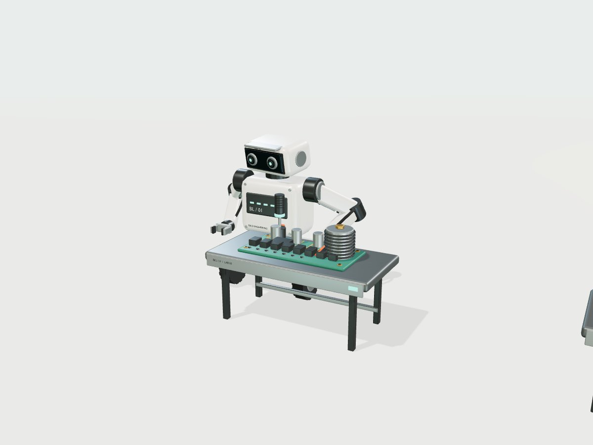
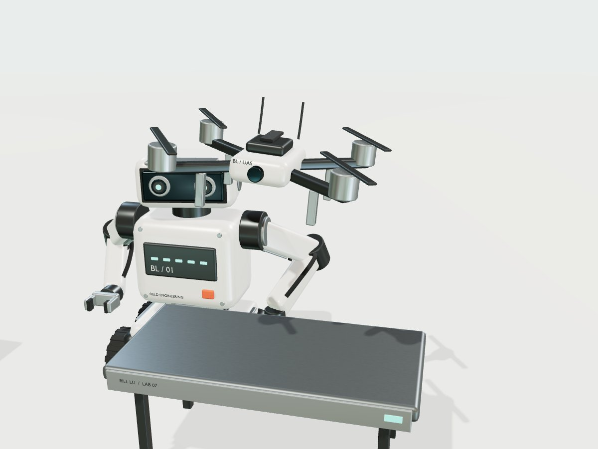
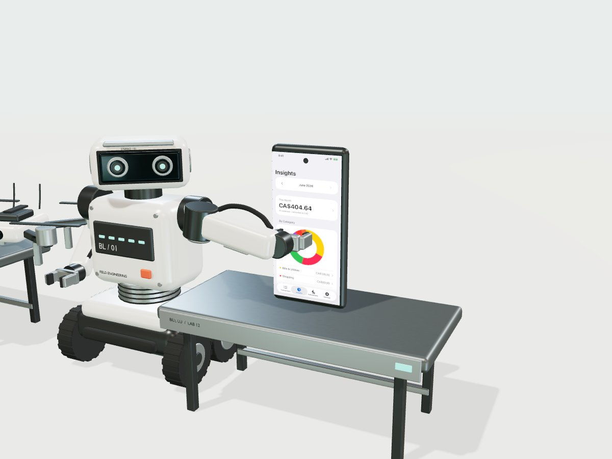
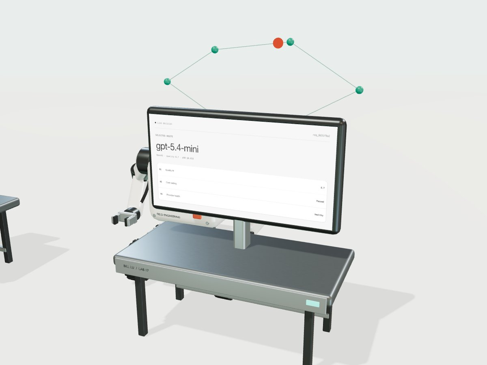
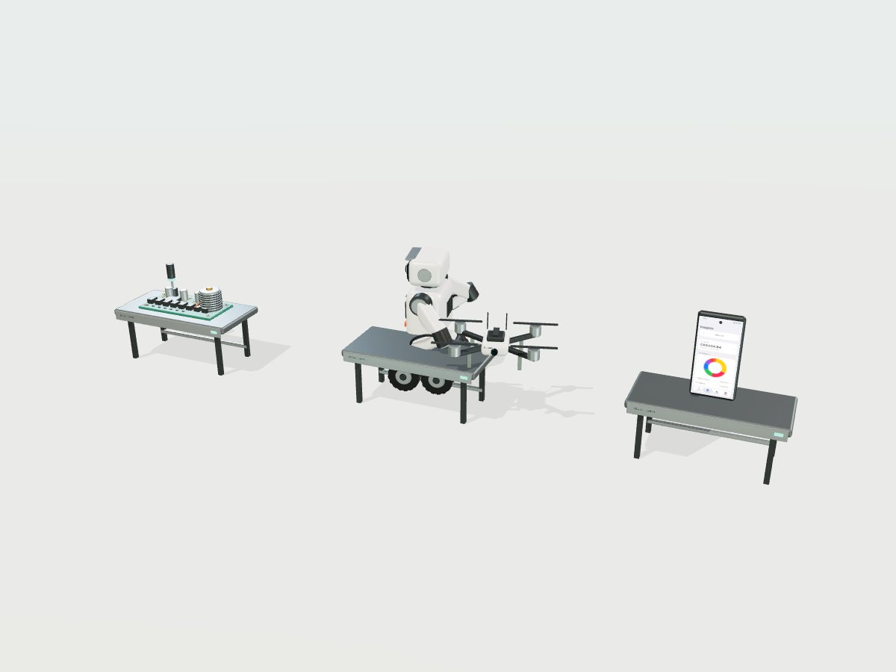

Computer Engineering / University of Waterloo
Jiarong
(Bill) Lu.
Hardware. Software.
The systems between them.
I build embedded controls, robotics software, and practical AI products. From the circuit to the experience.

03 / Waterloo Aerial Robotics Group
Code.
Meet flight.
A control loop with somewhere to go.
Built embedded flight software connecting motor drivers, PID attitude control, and propulsion modeling for student-built aircraft.
- My role
- Embedded Flight Software
- Focus
- C++ / control / simulation

04 / PocketPilot / Live on the App Store
Your money.
Your control.
A native iOS expense tracker I designed and engineered for Automate Agency. On-device receipt capture, clear insights, and storage you choose.
- My role
- Solo designer & engineer
- Built with
- SwiftUI / Vision / CloudKit

05 / SmartRouteOS & applied AI
Intelligence,
in operation.
Model routing that considers quality, latency, reliability, and cost. Production workflows with human review and observable results.
- SmartRouteOS
- Model routing & feedback control
- Automate Agency
- AI workflows & operational tooling

06 / The person behind the work
Curious by
construction.
I'm Bill, a Computer Engineering student at the University of Waterloo, expected to graduate in 2029. I enjoy working across the boundary between software and the physical world.
